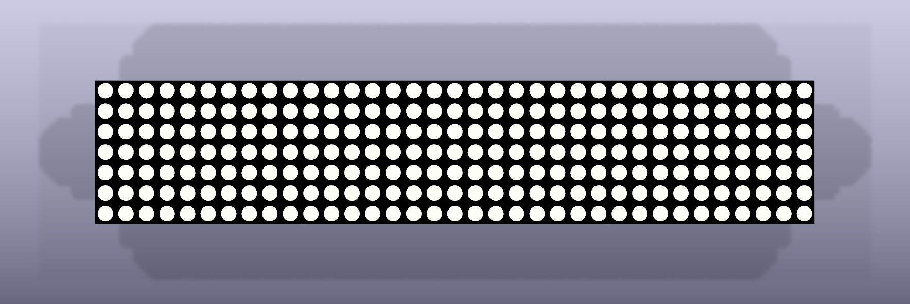
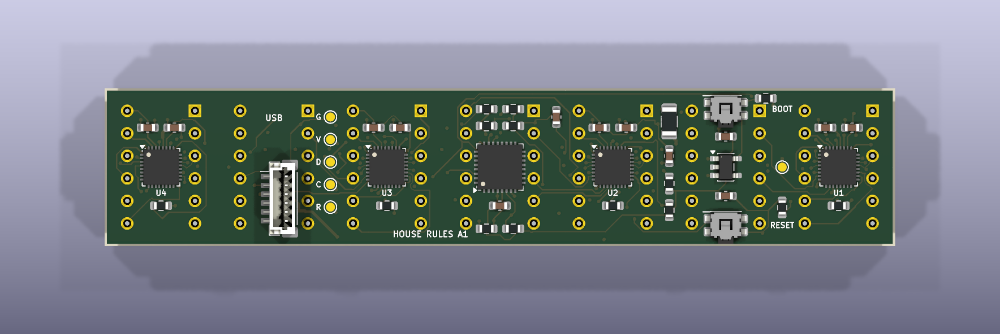
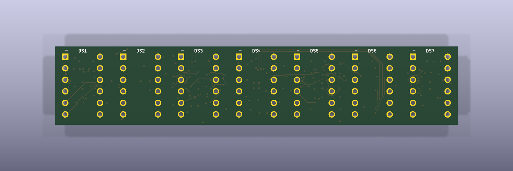
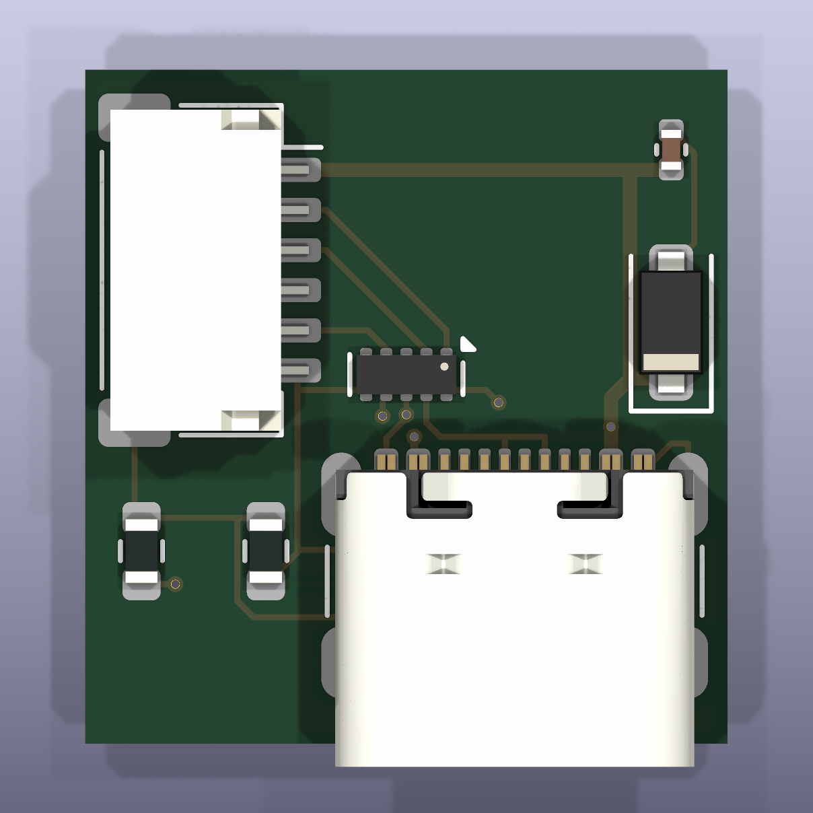
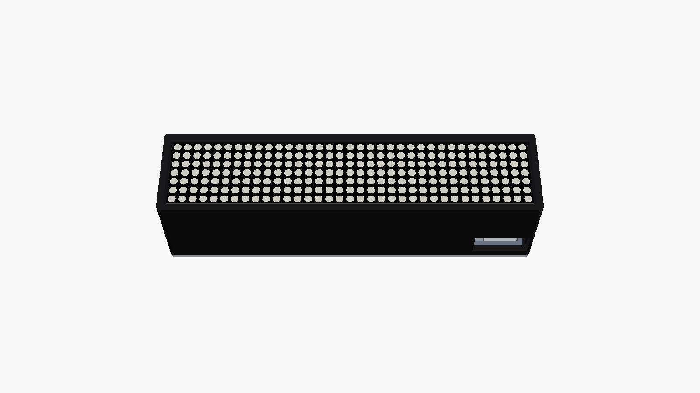

Rose Finn-Kelcey recreation · revision A1
House Rules.
A physical 7 × 35 display.
A programmable, USB-powered replica using your LED modules, with electronics hidden behind them.
CAD checks clean · bench release pending
Summary refreshed 29 October 2026 · 14:13 GMT. These are engineering files and CAD renders, not photographs of built hardware.
88.4 × 17.3 mmMain PCB · 6 layers · 1.6 mm thick
16 × 16.8 mmUSB carrier · 4 layers · 1 mm thick
245 red dotsSeven 5 × 7 modules · continuous 35-column screen
3 replicasYour 21 modules · 84 LED solder joints per unit
1. What the boards look like

Main PCB — top / LED sideNative KiCad CAD render; seven touching upright modules.
Main PCB — bottom / electronicsController and drivers behind the display.
Main PCB — top, without LED bodiesThrough-hole footprint before fitting displays.
USB carrier — component sideUSB-C, protection and six-wire connection.
Printable enclosure prototypeNative OpenSCAD render; case and cable fit still require a trial print.2. The electronics
An STM32G0B1KBU6 controls four IS31FL3729 drivers in groups of 2 + 2 + 2 + 1 displays. Paired modules share scanned anodes and retain independent row cathodes. The 47 kohm resistors give approximately 7.25 mA peak per dot and 342 mA average LED load with every dot on, before controller overhead. Measure current and temperature.
Six layers accommodate the lead fanout. USB data runs along the front upper margin. The carrier enables the bottom-right USB opening without colliding with LED leads.
3. USB power and programming
5 V, with source qualification
Both C-to-C and A-to-C cables are supported. No higher-voltage USB PD contract is requested. Full output requires a valid Type-C current advertisement, positive completed BC1.2 charger detection, or USB configuration granting the 500 mA descriptor. An unqualified source uses a conservative dim fallback. Separate 5.1 kohm CC terminations and 47k/47k ADC dividers provide orientation-independent detection.
The same port loads firmware
Programming uses the factory USB DFU bootloader, with BOOT/RESET controls and SWD recovery pads. BOOT0 is PA14/SWCLK, pin 25; its option bytes must be configured and recovery tested. A series resistor protects that shared recovery pin. CDC is the running application’s serial interface, with walking, all-on and checkerboard diagnostics. Driver shutdown stays low during startup/detection; host suspend blanks the display and selects STOP0.
Compiled prototype: 66,108 bytes flash / 4,560 bytes static RAM. The actual ELF’s descriptor and startup/charge-detection call flow were audited. Analogue detection, inrush, suspend current and wake remain physical tests.
4. How it comes together
The carrier sits behind the main board’s right end at (72.15, 0.25) mm. A six-wire harness carries VBUS, D−, D+, ground, CC1 and CC2. The main header is vertical; the carrier header is side-entry. Verify numbered pin order. The printed case concept is 93.6 × 22.6 × 24 mm. Check the actual plug and wire bends.
The 12.70 mm module repeat is datasheet nominal; the breadboard check establishes only 2.54 mm lead pitch. Seven-module physical fit remains pending. Have the factory fit small components; solder and prove one LED first, then finish the pilot before populating the other replicas.
Quote three main boards and three carriers with JLCPCB Economic PCBA, comparing a smaller pilot and PCBWay. Factory fit the 37 main and seven carrier components; keep your LEDs locally. Two assembly setups, part fees, shipping and UK VAT can dominate cost. No live delivered quote or purchase has been made.
5. Checks and release status
Schematic netlists match the current circuit specification. Counts use saved project rules; see native reports for scope. CAD checks do not establish physical correctness.
26 host tests passed; diode-path tests include polarity, aliases and current policy. All 22,248 artwork windows reconstruct correctly; the compiled player matched 60,000 frames. The functional model does not establish physical behaviour.
The review package matches its recorded source hashes. Factory file review and bench release remain separate holds.
6. Why KiCad
atopile defines hardware in code and works with KiCad layout. tscircuit combines TSX definitions with PCB generation and KiCad exports. This design uses KiCad for precise footprints, native 3D and ERC/DRC. A repository-owned Python specification keeps connections reproducible.
8. Release gates
- Before prototype fabrication: dry-fit seven modules against the 1:1 template/pin plate; confirm pin 1 and polarity at low current.
- Print fit samples; check leads, spacing, harness and USB plug.
- Review final CAD, assembly files and delivered quote before purchasing.
- On the pilot: measure current/heat and test chargers, orientations, DFU and suspend/resume before finishing the remaining units.